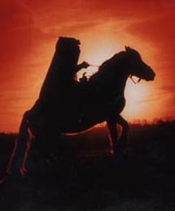

Cherry Hill
Cherry Hill in Fayette County is frequented by a headless horseman, the ghost of a man named Stephen Decker. Decker staked a claim in Fayette County and went off to camp for the night, only to be robbed and murdered and have his head cut off. His murderers found his body missing when they tried to pretend to "discover" his corpse.

Today Decker rides the area around Cherry Hill Road, a headless figure on horseback, seeking revenge. Some have reported seeing a body in the road, only to find that cars and even hands pass right through it.
Back
Sources
Gerrick, David J. Ohio's Ghostly Greats. Dayton: Dayton Press, 1982. pp. 14-15.